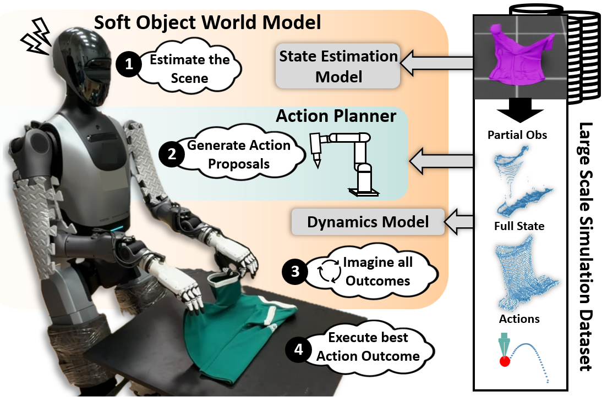
Robust manipulation of soft objects, such as garments, is a critical skill for service and household robots to adopt, but remains challenging due to its high-dimensional state space, and material-dependent deformations. Humans address this challenge by using mental world models that "imagine" the shape and material properties from partial observations, which enables them to predict how actions affect future states. As such, embedding such world models in robots allows for better generalization in manipulating a wide variety of garments in the real world. However, learned world models typically require large amounts of real world data that is strenuous to collect, and a mechanism to infer latent properties that govern dynamics. We present a Soft-Object World Model that performs generative full-state estimation and action-conditioned dynamics prediction using a transformer backbone trained on large-scale simulated soft object interactions, with measures to mitigate the sim-to-real gap. By learning to infer latent shape and material cues through in-context learning over a variable-length partial point-cloud history, the model generalizes across robot embodiments, material parameters, garment types and shapes, and manipulation coordination modes without weight updates. The world model is then integrated with a Goal-Conditioned action planner for motion synthesis. We validate the approach in simulation and real world for bimanual garment folding, reporting improvements in reconstruction fidelity, prediction accuracy, and task success.
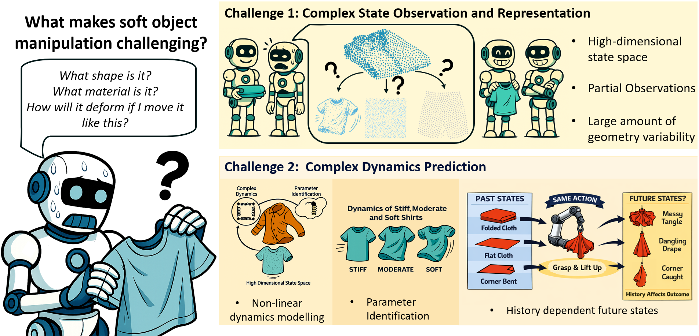
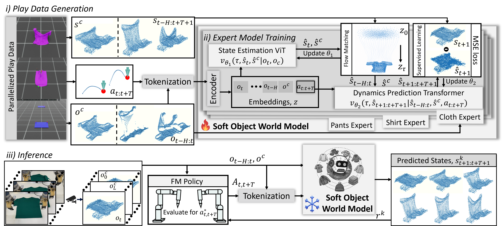
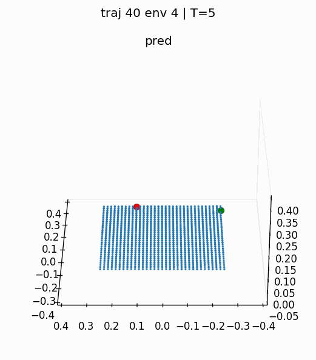
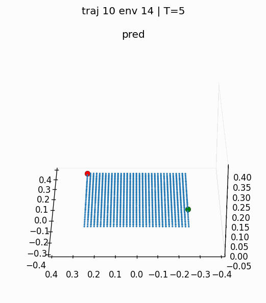
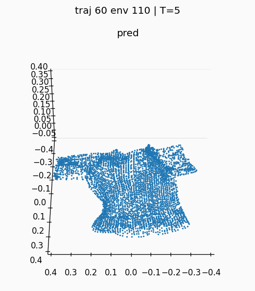
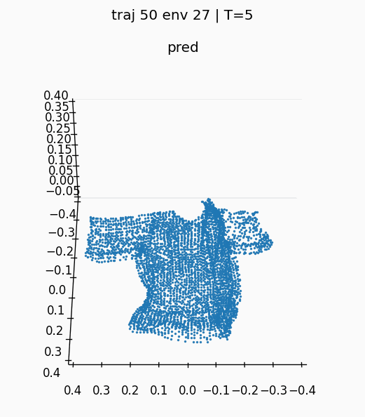
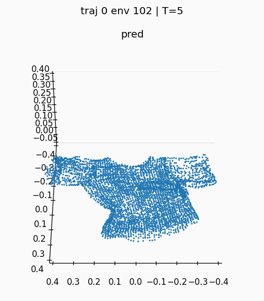
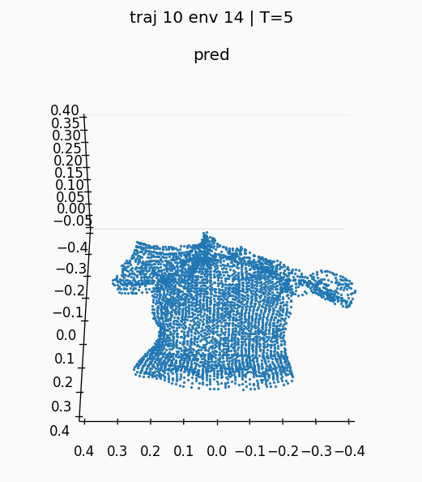
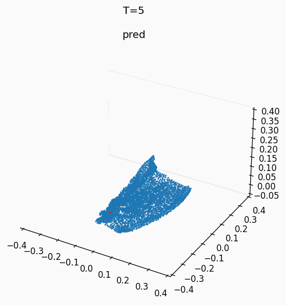
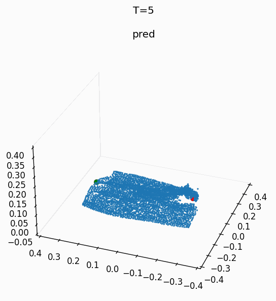
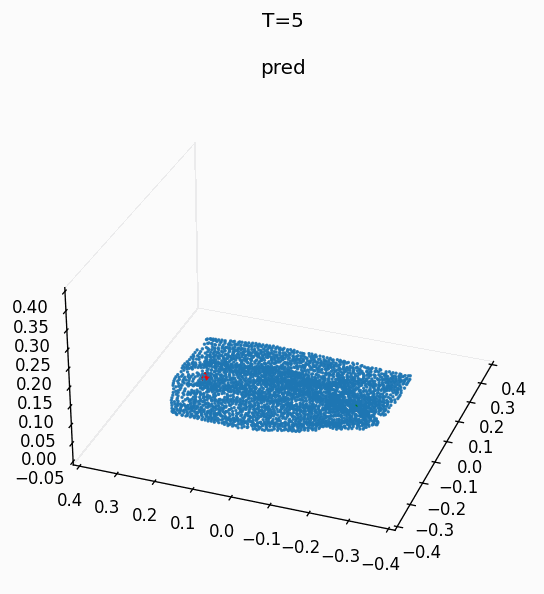
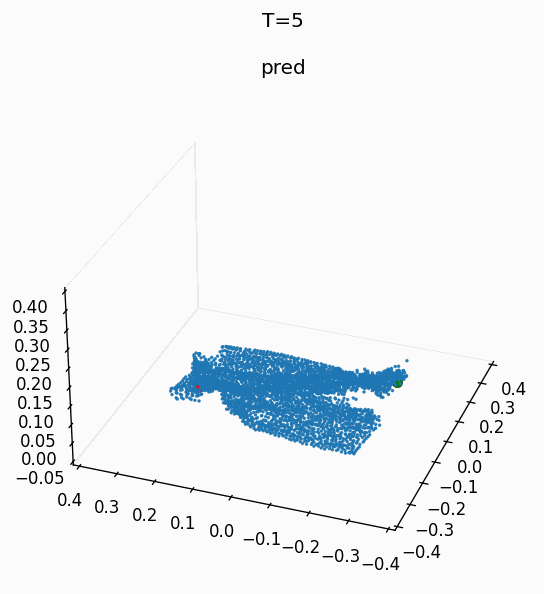
This work explores the impact of in-context learning on the performance of the soft object world model in predicting the states of objects with different material parameters. Matched predictions indicate that the context is sampled from a demonstration with similiar material parameters to the ground truth, while scrambled indicate scrambled material parameters compared to the ground truth.
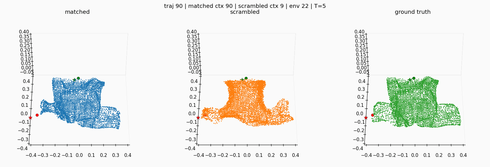
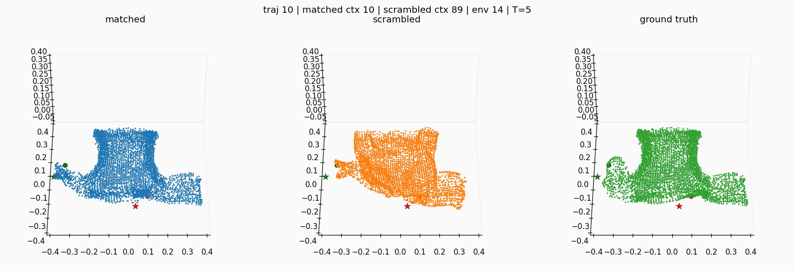
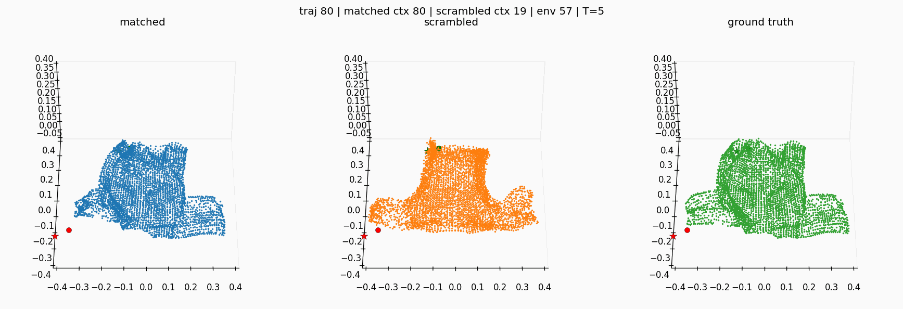
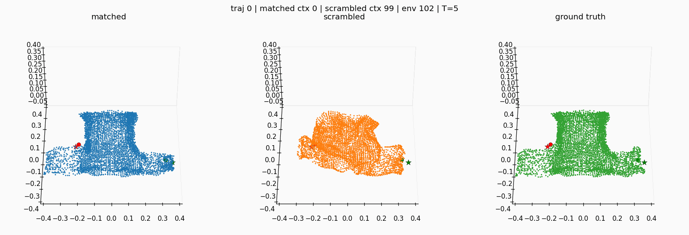
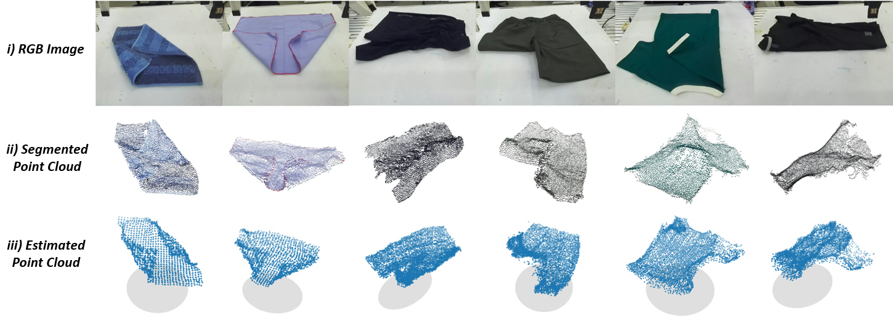
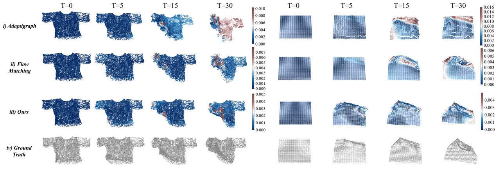
@inproceedings{rouxel2025extremumflowmatching,
title={Extremum Flow Matching for Offline Goal Conditioned Reinforcement Learning},
author={Rouxel, Quentin and Donoso, Clemente and Chen, Fei and Ivaldi, Serena and Mouret, Jean-Baptiste},
booktitle={2025 IEEE-RAS 24th International Conference on Humanoid Robots (Humanoids)},
year={2025},
organization={IEEE}
}